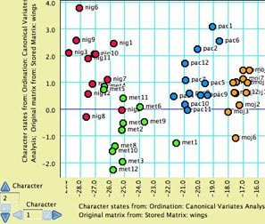
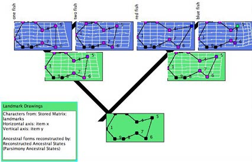

Continuous Characters
Continuous characters (e.g., with values 1.21, 5.68, and so
on) can be edited, manipulated, simulated and analyzed in various
ways in Mesquite. Below is a brief outline of these features,
some of which come from the standard packages of Mesquite, others
of which come from the built-in Rhetenor package (by Dyreson
and Maddison) and the separately-available PDAP package
(by Midford, Garland & Maddison). Many of these calculations
are more thoroughly illustrated in the example files under Mesquite_Folder/examples/Basic_Examples/continuous/,
and under Mesquite_Folder/examples/Multivariate_Continuous/
Contents
Editing continuous data
Continuous data can be imported from tab-delimited tables in
ASCII text files, or entered into the spreadsheet editor (Character
Matrix Editor). Values entered can be negative or positive, and
include exponential notation (e.g., "1.3e-6").
A continuous data matrix can have an extra dimension, in that
the entry for each cell of the matrix (character state in a taxon)
can have more than one number. These separate numbers are called "items",
and thus a character matrix can be described as having three
dimensions, characters X taxa X items. The first item could be
the mean; the second
the variance. Or, there could
be 3 items, x, y and z, representing coordinates of a landmark
in space. To manage items, use the Utilities submenu of the Matrix
menu.
The following can be applied to all or the selected portions of a continuous matrix in the Character Matrix Editor. These are available
under the Alter/Transform submenu of the Matrix menu:
- Fill — fills the cells with the current "paint" state
- Standardize — transforms the characters to have mean 0 and
variance 1.
- Random fill — fills the cells with randomly generated states,
with given mean and variance.
- Add random noise — adds random noise to the entries.
- Add constant — adds a specified constant to all entries.
- Multiply constant — multiplies all entries by a specified constant.
Other options may appear. You can also apply the other editing tools described
for character matrices.
Reconstructing ancestral states
Ancestral states of continuous characters can be reconstructed
as described in the page on reconstructing
ancestral states.
Plotting trees
Trees can be mapped or plotted into a character space as described
in the page on processes
of character evolution.
Simulating character evolution
Evolution of continuous characters can be simulated by selecting
Simulated Characters or Simulated Matrices, and choosing Evolve
Continuous Characters. You will get to choose a model, which
will be used to simulate evolution on the tree. There is one default model, a Brownian motion model with rate
parameter of 1.0. You can create alternative models (e.g. other Brownian motion models) by selecting New Character Model in the Characters menu.
Ordinations
Where matrices of continuous characters are used, for instance
in plotting trees or in Taxa Scattergrams, it is possible to
instead use characters representing the modified axes obtained
by ordinations such as Principal Components Analysis using modules
in the built-in Rhetenor package. For instance, the following
Taxa Scattergram shows the results of
a Canonical
Variates Analysis:

How to set up this plot is explained on the page on Charts.
To
use ordinations, simply select Characters from Ordinations
or Matrices
from Ordinations
wherever
you might otherwise select Stored Characters or Stored Matrices.
There are several options for ordinations:
- Principal Components Analysis
- Canonical Variates analysis — This requires a Taxa Partition
to exist to indicate groups of taxa.
- Among-group PCA
- Within-group PCA
- Evolutionary PCA (similar to PCA but tree-based)
The "Multivariate Continuous" example files
illustrate the use of these methods.
Tree reconstruction
The tree search facility (available under Trees&Taxa>Make
New Trees Block from>Tree Search) allows one to
search for trees minimizing treelength as calculated by linear
or squared change parsimony for continuous characters. It should be noted, however, that the current Tree Search facilities in Mesquite
do not adjust branch lengths. The squared change parsimony algorithms by default weight by branch length. Thus, the search is done
effectively under the constraint that all trees have branch lengths of 1.0.
Felsenstein's independent contrasts
Analyses of character correlations can be done by the separately-available PDAP package.
This is described briefly here.
Geometric morphometrics
Landmark data can be entered in Mesquite as a continuous matrix with multiple items. Each character is a landmark, and each item
is a dimension of the landmarks' coordinates. Thus, for two dimensional landmarks, the matrix could have the items "x" and "y".
Mesquite cannot yet perform Procrustes analyses
to bring landmarks into a common scaling and alignment across
taxa, but given that the data is already so prepared, the Landmark
Drawings module of the Rhetenor package can reconstruct ancestral
forms as shown below:

The algorithm used for the reconstruction is squared change
parsimony.